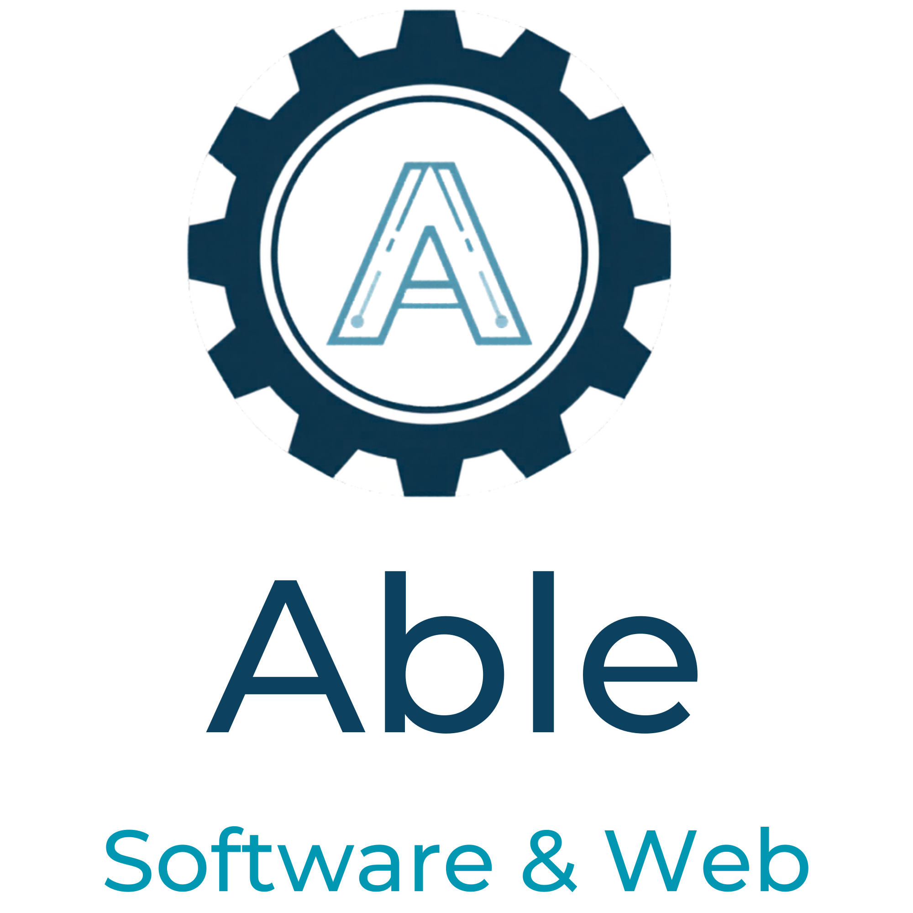

Small Business Websites
Starting at $900
Professional 2–3 page static websites for small businesses that need a modern, trustworthy online presence.
Small Business Websites • Automation Tools • Custom Software
Able Software & Web helps small businesses improve efficiency with modern websites, workflow automation, and practical software tools built around real operational needs.

Small businesses that need a clean, credible online presence so customers can find them, understand their services, and get in touch.
Processes that waste time because the same steps are repeated by hand every day.
Workflows that rely on fragile spreadsheets, duplicate data entry, and manual cleanup.
Tools and processes that do not work together, creating confusion and extra effort.
Starting at $900
Professional 2–3 page static websites for small businesses that need a modern, trustworthy online presence.
$50 / month
Reliable hosting, updates, backups, and basic ongoing maintenance to keep your website online and professional.
Starting at $500
Small automation tools and scripts that reduce repetitive work and improve operational efficiency.
Project-based pricing
Tailored tools and workflow systems designed around specific business processes and operational needs.
Custom workflow software designed to support laboratory calibration documentation, technician workflows, and operational record tracking.
Designing and building a professional website for a regional laboratory calibration business.
Able Software & Web helps small businesses build reliable websites and improve efficiency through practical automation and custom software tools. The focus is always on simple solutions that solve real problems and help businesses operate more smoothly.
With experience developing operational tools in high-volume production environments, every project is designed with reliability, clarity, and long-term maintainability in mind.
Before launching Able Software & Web, I built internal tools and workflow automation systems used in high-volume operational environments. The focus has always been on solving real business problems, not adding complexity.
Many businesses do not need oversized systems or unnecessary features. Projects are designed to be clear, reliable, and appropriate for the real needs and budgets of small businesses.
Websites, automation tools, and custom software should continue working well after launch. Every project is built with long-term usability, clarity, and maintainability in mind.
You work directly with the person building your solution. That means clear communication, fewer handoffs, and a better understanding of your business goals from start to finish.
Whether you need a website, a small automation tool, or a more specialized business solution, Able Software & Web focuses on practical systems that support real work.
Most inquiries receive a response within one business day. Initial conversations are free and focused on understanding your needs.
Get in Touch